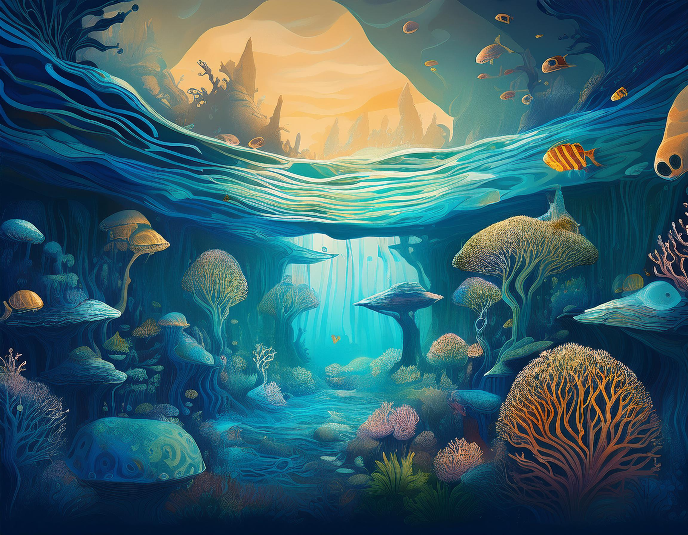

Introduction
The world's oceans and freshwater ecosystems, covering over 70% of Earth's surface,
are vital yet vulnerable resources that support biodiversity while providing essential services—oxygen,
climate regulation, food,
and economic opportunities for billions. Despite their importance, these ecosystems face unprecedented
threats from human activities
that have intensified since the industrial revolution. The UN's Sustainable Development Goal 14
acknowledges that protecting
aquatic environments is crucial for human progress. This essay examines three key dimensions of human
impact: pollution,
overexploitation of resources, and climate change effects. Understanding these interconnected issues is
essential for developing
solutions to safeguard life below water and, consequently, life on Earth.

Pollution and Contamination of Aquatic Ecosystems
Pollution represents one of the most visible human impacts on underwater environments. Approximately 11
million metric tons
of plastic enter the oceans annually—a figure projected to triple by 2040 without significant
intervention.
Once in marine environments, plastics degrade into microplastics and nanoplastics, which have been
detected
from the deepest ocean trenches to remote Arctic ice. These particles persist for centuries and are
ingested by marine organisms
at all trophic levels, causing physical harm and serving as vectors for toxic chemicals that can
bioaccumulate in marine food webs.
Chemical contamination introduces a cocktail of hazardous substances into aquatic ecosystems.
Pharmaceuticals alter reproductive patterns
in fish and other organisms even at extremely low concentrations. Heavy metals accumulate in marine
tissues, causing neurological damage
and reproductive failures. Agricultural runoff creates coastal "dead zones" through
eutrophication—excessive nutrient loading that triggers
harmful algal blooms, depletes oxygen, and creates uninhabitable conditions for most marine life.
Oil pollution, though less chronic than plastic or chemical contamination, causes devastating acute
impacts when spills occur.
Major disasters like the Deepwater Horizon blowout in 2010 demonstrate the catastrophic potential of
such events.
Less visible threats include noise pollution from shipping, construction, and military operations, which
disrupts
the vital acoustic communication systems of many marine species, and light pollution, which disorients
sea turtles, seabirds,
and other species that rely on natural light cues for navigation and reproduction.
.

Overexploitation of Marine Resources
The human relationship with marine resources has transformed dramatically in recent decades.
Industrial fishing technologies—including factory trawlers, extensive longlines, and sophisticated
sonar—have effectively
industrialized what was once a relatively low-impact activity. Global fish catch increased fivefold
between 1950
and 1990 before plateauing and beginning a gradual decline despite increasing fishing effort. According
to the Food and Agriculture Organization,
34.2% of fish stocks are now fished at biologically unsustainable levels, with another 59.6% maximally
sustainably fished.
Particularly concerning is the phenomenon of "fishing down the food web," where higher-value predatory
species are depleted first,
forcing fishing operations to target progressively smaller species at lower trophic levels. This cascade
fundamentally alters marine
ecosystem structure and resilience. The collapse of Atlantic cod in the early 1990s exemplifies these
dynamics;
despite a moratorium on commercial fishing since 1992, the population has shown minimal recovery.
Destructive fishing practices compound overexploitation by damaging marine habitats. Bottom
trawling—dragging weighted nets
across the seafloor—effectively clear-cuts underwater landscapes, destroying long-lived corals, sponges,
and other habitat-forming organisms.
Bycatch—the incidental capture of non-target species—represents another significant issue, with about
40% of marine catch discarded globally,
including endangered sea turtles, marine mammals, and seabirds.
Beyond fishing, emerging industries like deep-sea mining threaten unique benthic ecosystems
characterized by extremely high endemism
and low resilience to disturbance. Scientists warn that such activities could cause unprecedented
biodiversity loss in largely unexplored
environments.

Climate Change Impacts on Underwater Environments
Climate change represents perhaps the most profound human impact on life below water, affecting every
ocean basin
and aquatic ecosystem on Earth. More than 90% of excess heat from human-induced global warming has been
absorbed by the oceans,
resulting in an average temperature increase of 0.13°C per decade in the upper 75 meters of water since
1971. This warming forces
species to shift their ranges poleward or into deeper waters when possible, while sessile organisms and
mobility-limited species
face severe adaptation challenges.
Coral reef ecosystems illustrate the devastating potential of ocean warming. When water temperatures
exceed corals' thermal thresholds,
they expel their symbiotic algae in a process called bleaching. The world has experienced three global
coral bleaching events since 1998,
with the 2014-2017 event affecting 70% of coral reefs worldwide. Models suggest that even if global
warming is limited to 1.5°C
above pre-industrial levels, 70-90% of tropical coral reefs will be lost by 2100.
Ocean acidification, caused by absorption of anthropogenic carbon dioxide, threatens calcifying
organisms that build shells
or skeletons from calcium carbonate. Surface ocean pH has already declined by 0.1 units since the
pre-industrial era—a 30% increase
in acidity—and is projected to decrease by another 0.3-0.4 units by 2100 under high-emission scenarios.
Deoxygenation presents a third major climate-related threat. Warmer water naturally holds less dissolved
oxygen, while increased thermal
stratification reduces vertical mixing. Concurrently, warming accelerates metabolic rates in marine
organisms, increasing their oxygen demands.
The volume of oxygen minimum zones has expanded by several million cubic kilometers since the mid-20th
century.
The cumulative impact of these multiple climate stressors exceeds what would be expected from any single
factor,
creating synergistic effects that may push many marine ecosystems beyond tipping points from which
recovery becomes impossible.